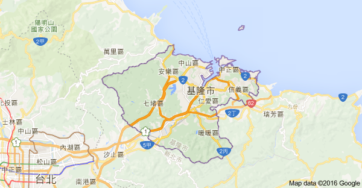
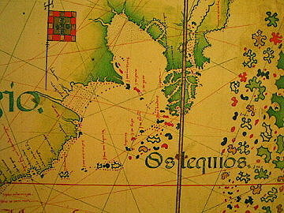
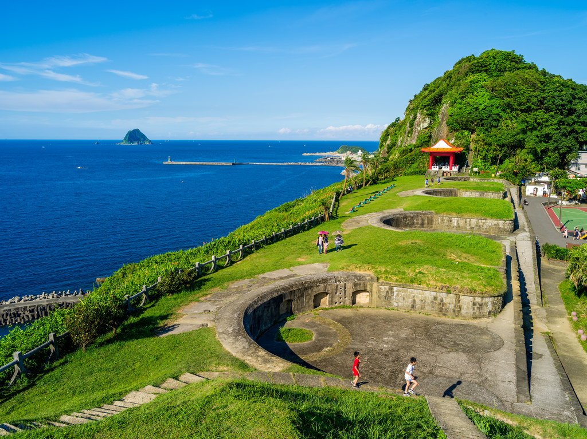
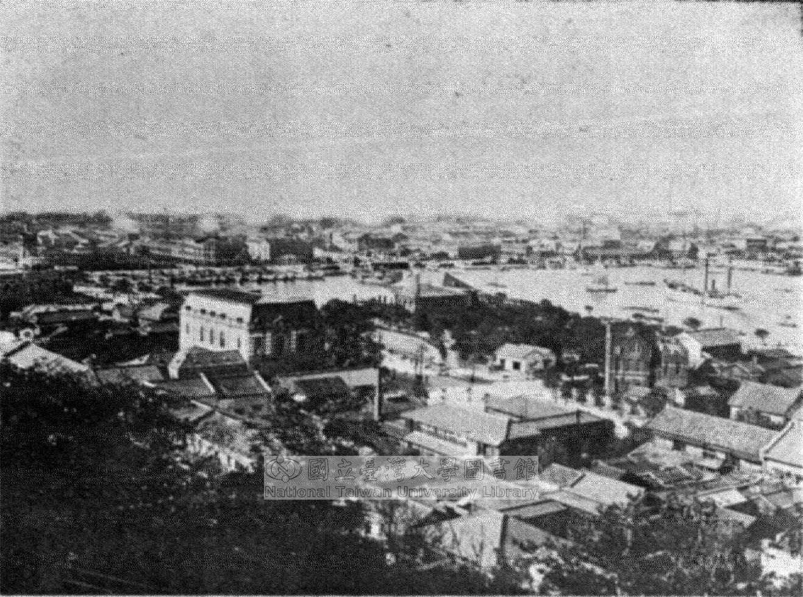
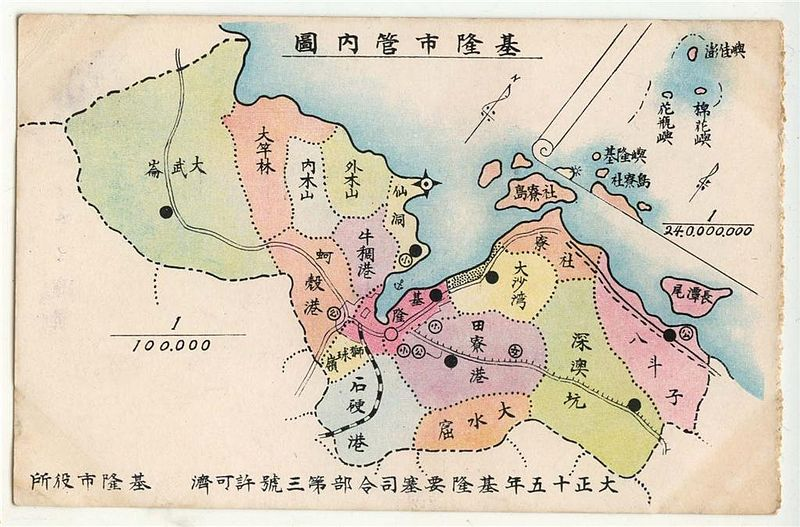
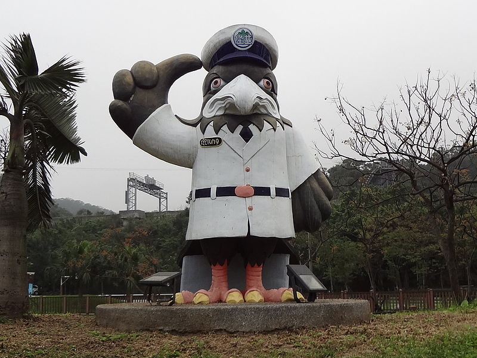
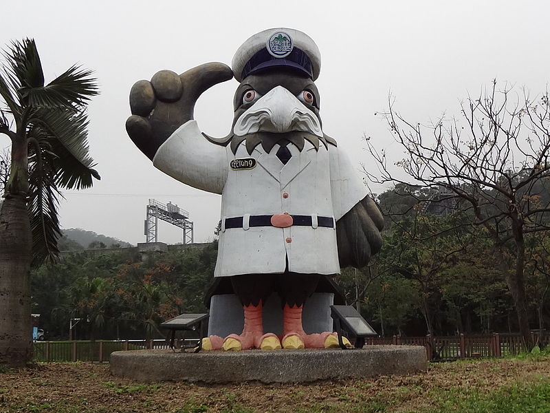

位置
基隆位置
基隆市，是中華民國臺灣省的一個市，位於臺灣東北部的都市，古名雞籠，以深水谷灣之天然港灣著名，乃臺灣最北端的都市，境內的基隆港又是北臺灣首要航運樞紐，因而有「臺灣頭」與「臺灣北玄關」之稱，亦因氣候多雨而別稱「雨港」、「雨都」。
人口約37.3萬人。全市百分之95土地為丘陵地，東、西、南三面環山與新北市相鄰，僅北面有少量的平地與東海毗鄰。其都市發展起始於清治末期，在日治時期因港口開發而興起，人口曾躍居臺灣第四、1980年代曾為世界第七大貨櫃港；但由於市區與港口發展腹地受限、加上鄰近臺北，今日已發展成為臺北都會區重要之衛星都市，但並非屬於新北市一部分。
歷史
荷西及明鄭時期
 17世紀時，西班牙人和荷蘭人曾先後佔領過基隆。當時殖民菲律賓群島的西班牙人，因著荷蘭東印度公司佔領台灣南部威脅其商業利益，為牽制荷蘭人，明天啟五年（1626年）從呂宋島航行北上，經由三貂角進入台灣，並由雞籠登陸殖民台灣北部，此為雞籠開發之始。崇禎十五年（1642年），在南部的荷蘭殖民當局派軍將西班牙人趕出台灣。當時荷西兩方，皆以「雞籠島」（即今日的和平島）為基地進行殖民統治，西班牙人於雞籠島建築「聖薩爾瓦多城」，荷蘭人取代後，將聖薩爾瓦多城改名「北荷蘭城」，並於雞籠屯兵以利防備。
鄭氏王朝在南台灣打敗荷蘭人之後，由於荷蘭人仍領有台灣北部，並暗中與清朝合作意圖重佔全台，故於1668年揮軍北上，將殘餘駐守在雞籠的荷蘭人驅離，至今在和平島還有荷蘭人臨走前所留下的「蕃字洞」遺跡。鄭氏王朝在驅趕荷蘭人後，由於將其統治重心置於南部，除了幾次軍事行動外，在雞籠幾乎無任何活動。
清領時期
台灣進入清領時代初期時，雞籠大部分地區還是蠻荒之地，只有今日的和平島有較多的漢人聚集，以及一些平埔族原住民部落分布於雞籠港周圍。滿清雍正元年（1723年），來自福建漳州的移民開始入墾雞籠港區，並於南岸興建崁仔頂街，此乃今日基隆市街創建之始。後來又陸續興建了暗仔街及新店仔街，此後陸續有漢人移民移入，開墾的區域也逐漸深入較內陸的地區，而不只侷限於港區周圍。
在19世紀西方列強東來後，美國海軍調查到雞籠擁有豐富的煤礦層及港灣優良，回國後建議政府將其佔領，在鴉片戰爭時也有英國軍艦前來叩關。在英法聯軍之役之後的1863年，雞籠終於隨著台灣開港而開放為貿易港，成為淡水的副港。由於人口日增，為了因應國際貿易以及地方管理上的需要，同治十年（1871年），清廷於雞籠設置海防同知，專辦海防及煤礦事務；光緒元年（1875年），雞籠設置台北分府通判，並將雞籠改名為「基隆」，此為基隆正式設治之始。
日治時期
1895年日本接收台灣時，台灣總督府在基隆開始運作，並舉行簡單儀式正式「始政」。日本人為了將基隆建設為台灣與日本的轉運點，從1899年開始到1935年，展開了共進行四期的基隆港築港工程（第五期因二戰爆發而未完成），在和平島及八尺門一帶，也設置了漁港區、水產試驗場及造船廠。基隆也是日本海軍的重要基地，當時被總督府劃為要塞地帶管制，並設立「基隆要塞司令部」，使得基隆港成為一座軍、商、漁三用途的港口，也使基隆正式取代淡水，成為台灣北部的主要門戶。
1920年時台北州基隆郡設立，並另劃市區部分設置基隆街（類似今日之鎮）；1924年基隆街升格為台北州的州轄市，此為基隆市正式設置之始。此時，基隆的貿易額已經占了當時全台灣貿易總額的二分之一，完全取代了淡水在台灣北部的門戶地位，與高雄一南一北並稱為日治時代台灣兩大港市。因與日本的貿易密切，也使得大量的日本人移居基隆。
戰後至今

二戰結束後，中華民國接管臺灣，原台北州基隆郡改制為台北縣基隆區，基隆市則下設五行政區。基隆於戰後之初，是日本人撤退及國府接收台灣的主要出入點；1947年發生二二八事件時，基隆成為受創最嚴重的地方之一，當時國民政府的鎮壓部隊由基隆港登陸，而港區也曾淪為國軍掃蕩的激烈戰場。1949年國府遷台後，基隆湧進大量軍隊與眷屬，並負責接收逃難台灣的大陸移民，在之後美軍開始駐紮，使得基隆又進入的新的發展期。基隆的礦工業經過復建後再度興盛，週邊的採煤業更在1968年達到高峰。而基隆港從1961年因應台灣經濟的快速成長，從內港到外港進行了多次擴建，到1984年已名列世界第七大貨櫃港。
近年來，依靠港埠維持城市運作的基隆市遇到了發展瓶頸。身為基隆發展核心的基隆港，1990年代後因為腹地過小等因素，敵不過鄰近地區港口的大型化競爭而逐漸衰退，連帶使得基隆的都市建設發展開始遲緩，並嚴重影響了基隆的城市競爭力。而2008年台北港的啟用，更將使基隆港未來營運發展的情勢更加嚴峻。
未來展望
 

基隆市因著與港口，和海洋的關係如此密切，市政府陸續推出「海洋城市」、「繽紛活力新雞籠」、「山與海的城市」等城市口號來宣傳基隆的海洋城市性格。而面對基隆市的發展困境，為了讓基隆市從純粹的港口都市轉型升級，近幾屆的市長更陸續推動了多個大型都市更新計畫，如「海洋科技園區」、「國門山海關」、「環港區都市更新案」、「七堵新都心」等，希望再度將基隆打造成台灣的門戶都市。雖然如此，目前基隆市整體都市發展目標不明的問題，還待更積極的解決。